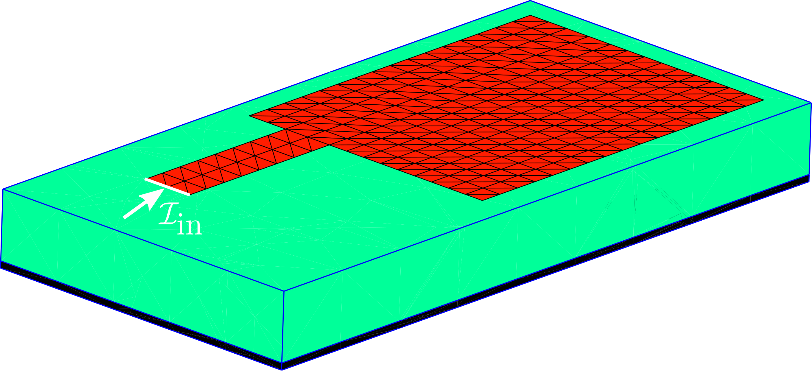
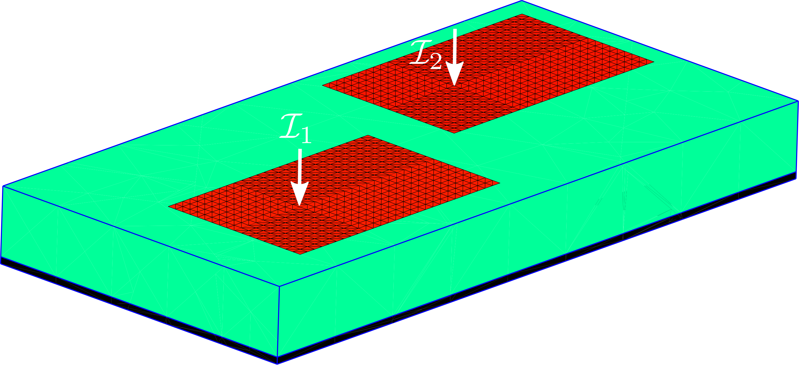
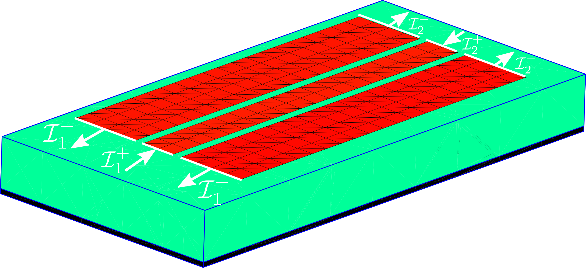
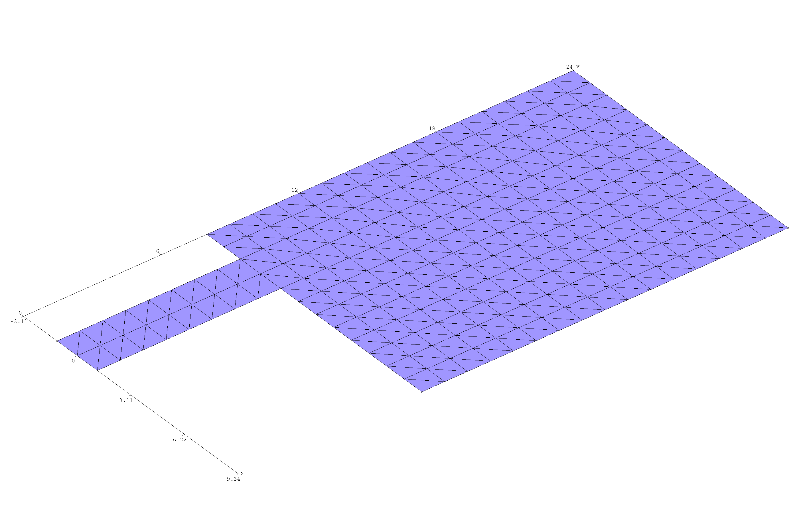

Input impedance, mutual coupling, and radiated fields of microstrip RF devices
In this example, we use the scuff-em RF module together with scuff-em's built-in support for implicit multilayer dielectric substrates in full-wave calculations to compute multiport -parameters, -parameters, and radiated field pattern of antennas, coplanar waveguides, and other microstrip RF devices---arbitrarily-shaped finite-sized metal traces lying on the surface of an (infinite-area) dielectric substrate, optionally terminated below by a perfectly-conducting ground plane. More specifically, we will consider three particular examples (click the pictures for larger images):
|  | an edge-fed patch antenna, for which we will compute input impedance over a wide bandwidth and radiation patterns at specific resonance frequencies |
|  | two coupled center-fed patch antennas, whose mutual coupling we will study as a function of their separation, and |
|  | a section of a coplanar waveguide, which we will treat as a two-port device and compare computed multiport S-parameters to the predictions of transmission-line theory. |
{kind=link}
{kind=link}
{kind=link}
In all of these calculations, the metal traces (red regions) are described by the usual discretized triangle mesh files common to all scuff-em geometries, but the dielectric substrate (green) and ground plane (black bottom layer) are not meshed; instead, the presence of the substrate layers is taken into account implicitly through the use of an appropriate Green's function. (Note that this implicitly-described substrate is always infinitely extended in the and directions; do not be misled by the apparently finite transverse size of the substrates in the pictures above.)
The input files for all of these examples may be found in the share/scuff-em/examples/MicrostripDevices
subdirectory of your scuff-em installation.
The scuff-em RF module: A brief overview
The scuff-em RF module is discussed in detail at its main documentation page, but for busy readers we summarize here some salient points.
-
The module extends the scuff-em core library to allow RF modeling problems to be studied within the framework of the surface-integral-equation (SIE) approach to electromagnetic scattering implemented by scuff-em.
-
The functionality of the module may be accessed either from C++/python API codes or via the
scuff-rfcommand-line module distributed with scuff-em; in particular, all of the microstrip-device calculations covered in this example may be done equally well in python or from the command line, and we will show how to do everything both ways. -
The primary way in which the RF module extends the core library is by adding support for RF ports, regions of meshed surfaces at which external RF currents (white arrows in the figures above) are injected or extracted. This means that, in addition to specifying the usual collection of meshed surfaces constituting a scuff-em geometry, you must also define one or more ports for your structure. Port terminals in scuff-em are defined by geometric objects: lines or polygons (identifying regions on the boundaries of meshed surfaces) or points (identifying source/sink points inside meshed surfaces). Port definitions may be communicated to scuff-em by
- (a) writing a simple text file (
.portsfile), - (b) making API calls from C++/python,
- (c) creating a GDSII file containing points, lines, or polygons tagged by special text strings.
- (a) writing a simple text file (
Examples of all of these methods are discussed below.
Layout of the MicrostripDevices directory
All files needed to run the examples described here may be found
in the share/scuff-em/examples/MicrostripDevices directory of your
scuff-em installation. The files are organized into
subdirectories as follows:
scuffgeoFiles: scuff-em geometry files (.scuffgeofiles)mshFiles: gmsh-produced mesh files (.mshfiles) referenced by the `.scuffgeo filesgeoFiles: gmsh geometry files (.geofiles) that are meshed by gmsh to produce.mshfilesportFiles: Files defining RF ports (.portfiles)GDSIIFiles: GDSII files that may be used in place of.portfiles (and optionally in place of.scuffgeofiles, although this is not recommended)python: Python scripts that run the calculations described belowbashScripts: Shell scripts that run the calculations described below
Example 1: Edge-fed patch antenna
Our first example is the edge-fed patch antenna shown above and studied originally in this paper:
This antenna is also used as a demonstration example for the commercial solver FEKO:
Defining metal meshes
The metal patch is described by the GMSH geometry file
EdgeFedAntenna.geo,
which we process with gmsh to yield mesh files
EFAntenna_L8_Coarse.msh (coarser discretization) and
EFAntenna_L8_Fine.msh (finer discretization):
% gmsh -2 EdgeFedAntenna.geo -setnumber LFeed 8.0 -setnumber N 1 -o EFAntenna_L8_Coarse.geo % gmsh -2 EdgeFedAntenna.geo -setnumber LFeed 8.0 -setnumber N 2 -o EFAntenna_L8_Fine.geo
The coarser mesh looks like this:

Note that the .geo file contains several user-definable parameters, of which
we are here specifying two: LFeed (length of feed line) and N (discretization
fineness, i.e. number of triangle edges per unit length). Also note that we have
taken care to create a highly structured mesh,
which yields an enormous reduction in computational cost.
Defining ports
The next step is to define a single RF port with positive terminal lying on the feed edge.
(We won't specify a negative terminal for this port; this is equivalent to placing
the negative terminal on the substrate ground plane).
Note that the .geo file is set up to ensure that the feed edge always lies on the
-axis centered at the origin, irrespective of the settings of the user-tweakable
parameters; this means that we only need to define one port specification one
time, and can then reuse it for all meshes produced from this .geo file.
In this case, we can simply specify the port to be defined by a line segment
lying on the axis and extending at least over the
range .
For example, we might define this line segment to run from
to ; in a python code
this would look like
Solver.AddPort([-5, 0, 0, 5, 0, 0])
Alternatively, we could write a .port file (call it EFAntenna.ports)
consisting of just three lines:
PORT POSITIVE -5 0 0 +5 0 0 ENDPORT
and specify this file by saying Solver.SetPortFile("EFAntenna.ports") (in python)
or --portFile EFAntenna.ports on the scuff-rf command line.
Defining the substrate
Finally, we need to define the grounded dielectric substrate. Referring to the original paper cited above, the substrate has relative permittivity and thickness mm and is terminated by a ground plane. We could describe this situation in python by saying
Solver.SetSubstratePermittivity(2.2) Solver.SetSubstrateThickness(0.794)
Alternatively, we could write a text file called EFAntenna.substrate:
0.0 CONST_EPS_2.2 -0.794 GROUNDPLANE
and say Solver.SetSubstrateFile("EFAntenna.substrate") (in python) or
--substratefile EFAntenna.substrate (on the scuff-rf
command line). (Or we could include the content of the file
in a SUBSTRATE...ENDSUBSTRATE clause in a .scuffgeo file.)
Python calculation
Command-line calculation
Here's how the same calculation is run from the command line using scuff-rf:
Example 2: Coupled center-fed patch antennas
For our next trick, we again pursue the theme of microstrip patch antennas, but now with some variations:
-
First, instead of the reflection coefficient () of a single antenna, we'll look at the coupling () between two patch antennas.
-
Second, these antennas are driven by currents injected into points lying inside them (they are center-fed), not edge-fed like the previous example.
-
Third, instead of varying the frequency, we'll (mostly) keep the frequency fixed and instead vary the separation distance between the patches; to do this with maximum efficiency in scuff-em we will need to take advantage of the structure of the system matrix---which will turn out to be extremely easy to do.
The antennas in this example were studied in this paper: